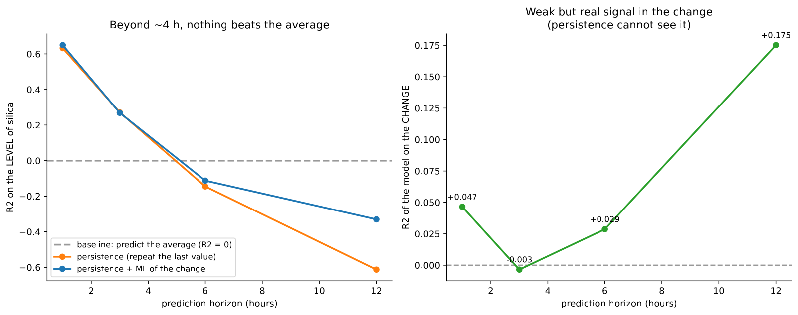

In 30 seconds
- 0 of 4. At none of the four horizons tried does machine learning give a deployable model.
- Persistence sinks on its own. It is worth 0.632 at one hour, 0.271 at three, and turns negative from five onwards.
- At 12 hours the level model makes things worse, with R² −0.851 against persistence's −0.613.
- There is an own signal and it is real: predicting the change gives R² +0.175 at 12 hours. Real, and still insufficient.
- Three more attempts to topple the verdict, and all three fail. Retraining, splitting by regime and turning the question into a warning.
What this module solves
Module 7 left one way out open. At one hour persistence is unbeatable because the process has barely moved. At longer horizons that advantage has to disappear.
Here it is checked. The measurement is repeated at 1, 3, 6 and 12 hours. And changing the question is tried: instead of predicting how much silica there will be, predicting how much it is going to rise or fall.
And since the verdict is strong, the module ends by trying to break it three more ways.
Before the theory: a toy example
Five hours of a plant rising two at a time.
| Hour | 1 | 2 | 3 | 4 | 5 |
|---|---|---|---|---|---|
| % SiO₂ | 2 | 4 | 6 | 8 | 10 |
The mean is 6, and the variation around that mean is:
error of always predicting the mean = [(2−6)² + (4−6)² + (6−6)² + (8−6)² + (10−6)²] / 5
= (16 + 4 + 0 + 4 + 16) / 5
= 40 / 5
= 8That 8 is the reference. R² compares against it.
Step 1. Persistence one hour ahead
Predict each hour with the previous hour's value. Since the plant rises two at a time, each miss is worth 2.
error = 2² = 4
R² = 1 − (4 / 8) = 0.50Step 2. Persistence two hours ahead
Now the answer has to be given two hours in advance, so the last value available is the one from two hours ago. Each miss is worth 4.
error = 4² = 16
R² = 1 − (16 / 8) = −1.00Already negative. Two hours in advance, repeating the last value is worse than saying the mean.
Step 3. Persistence three hours ahead
error = 6² = 36
R² = 1 − (36 / 8) = −3.50Step 4. See the fall together
| Lead | Typical miss | Error | R² |
|---|---|---|---|
| 1 hour | 2 | 4 | 0.50 |
| 2 hours | 4 | 16 | −1.00 |
| 3 hours | 6 | 36 | −3.50 |
Persistence's advantage collapses with the horizon, and it does so fast: the error grows with the square of the lead.
Step 5. What just happened
Two different questions appear, and they have to be separated.
The first is whether machine learning beats persistence. At a long horizon that is easy, because persistence sinks on its own.
The second is whether machine learning is any use. For that, beating a rival that is already worse than the mean is not enough. You have to beat the mean, that is, have a positive R². That is the real bar, and the module applies it at all four horizons.
Glossary
7 terms, in plain words
- Prediction horizon. How far in advance the answer has to be given. Here 1, 3, 6 and 12 hours are tried.
- Level model. The one that predicts the value of the silica.
- Change model. The one that predicts the difference from the last known value. Its target is a different one.
- Persistence plus change. The combination: the last known value plus the change the model predicts.
- Rolling retraining. Training again every so often with all the past available, as would be done in the plant.
- Moving window. Training only with the last N days, discarding the old.
- Per-regime model. A different one for each operating state, instead of a single one for everything.
Step by step
Step 1. Build the shifted target
For a three-hour horizon, the target of the 10:00 row is the silica at 13:00. And the input variables can only be those of 10:00 or earlier.
That makes the lags of module 5 lose their strength. 12 hours ahead, the most recent silica available is already 12 hours old.
Step 2. Measure four competitors at each horizon
- predicting the mean,
- persistence,
- the level model,
- the change model, added to the last known value.
Step 3. Apply the right bar
Beating persistence stops being enough as soon as persistence is negative. The bar becomes zero, which is predicting the mean.
Step 4. Try the alternative question
Persistence, by construction, always predicts zero change. If a model manages to predict the change with a positive R², that is signal persistence cannot have.
Step 5. Try to break the verdict
A strong verdict has to be attacked. Three ways: retraining as would be done in the plant, training one model per operating regime, and turning the question into an out-of-specification warning.
The code, in parts
Step 1. Shift the target and measure the four competitors
for lead in (1, 3, 6, 12):
objetivo = data[TARGET].shift(-lead)
ultimo_conocido = data[TARGET]
cambio = objetivo - ultimo_conocido
print(lead, r2_score(y_test, ultimo_conocido[test_idx]))line by line, 2 entries
.shift(-lead)- Shifts upwards. The 10:00 row receives the value of 13:00, which is what has to be predicted three hours in advance.
objetivo - ultimo_conocido- The change. Predicting this is a different question, even though the data are the same.
lead_h baseline_media persistencia modelo_nivel modelo_cambio persist+cambio
1 -0.000 +0.632 +0.641 +0.047 +0.649
3 -0.000 +0.271 +0.273 -0.003 +0.269
6 -0.000 -0.145 -0.147 +0.029 -0.112
12 -0.000 -0.613 -0.851 +0.175 -0.330
Step 2. Retrain as would be done in the plant
for dias in (28, 14, 7, 3, 1):
puntuacion = rolling_retrain(data, feats, dias)
print(f"cada {dias} dias R2 {puntuacion:+.4f} aporte {puntuacion - r2_persistencia:+.4f}")line by line, 1 entry
rolling_retrain(...)- Walks forward through time retraining every N days, always with data strictly earlier than the window it is about to predict.
Persistencia (repetir la hora anterior): R2 +0.6323
Lo que hizo el proyecto, un modelo congelado dos meses: R2 +0.6413 (+0.0090)
1. ¿Y si se reentrena, como se haría en planta?
cada 28 días R2 +0.6352 aporte +0.0029
cada 14 días R2 +0.6316 aporte -0.0008
cada 7 días R2 +0.6408 aporte +0.0085
cada 3 días R2 +0.6329 aporte +0.0006
cada 1 días R2 +0.6340 aporte +0.0016Step 3. One model per operating state, and the question as a warning
puntuacion = per_regime(train, test, base, feats)
as_warning(train, test, feats)line by line, 2 entries
per_regime(...)- Groups the training set into three states with k-means and fits one model inside each.
as_warning(...)- Turns the problem into an out-of-specification warning and compares three rules.
2. ¿Y si se entrena un modelo por estado operativo?
uno por estado R2 +0.6014 aporte -0.0310
modelo único R2 +0.6413 aporte +0.0090
3. ¿Y si la pregunta era avisar, en vez de predecir el valor?
aviso acierto precisión atrapa falsas se escapan
siempre en spec 0.810 - 0 0 182
persistencia 0.912 0.769 140 42 42
clasificador 0.901 0.813 113 26 69The result, measured
What we expected. That at long horizons the model would pull away from persistence and a useful window would appear, perhaps at three or six hours.
What came out. The model pulls away, but downwards.
| Lead | Predicting the mean | Persistence | Level model | Persistence + change |
|---|---|---|---|---|
| 1 hour | 0.000 | 0.632 | 0.641 | 0.649 |
| 3 hours | 0.000 | 0.271 | 0.273 | 0.269 |
| 6 hours | 0.000 | −0.145 | −0.147 | −0.112 |
| 12 hours | 0.000 | −0.613 | −0.851 | −0.330 |
What it means. From five or six hours on, nobody wins any more. Neither persistence nor the model beats saying the mean, which is having no model.
And at 12 hours the level model is the worst of all, with −0.851. Trained on some conditions, applied to others and without the anchor of the last assay, it does active harm.
The project's only own signal
The change model's column tells another story:
| Lead | R² of the change model |
|---|---|
| 1 hour | +0.047 |
| 3 hours | −0.003 |
| 6 hours | +0.029 |
| 12 hours | +0.175 |
At 12 hours, the model predicts the change with R² +0.175. That is signal persistence cannot have, because persistence predicts zero change by definition.
It is the project's positive finding and it has to be reported whole. It also has to be reported that it is not enough: added to the last known value, the result at 12 hours is still −0.330.
Three more attempts to break the verdict
If the verdict is "do not deploy", it is worth attacking it before signing it.
| Suspicion | What was measured | Result |
|---|---|---|
| The model had been frozen for two months | Retraining every 1, 3, 7, 14 and 28 days | Contribution between −0.001 and +0.009. Nothing changes |
| Training only on recent data would help | Windows of 30, 60 and 90 days | Worse, from −0.012 to −0.040 |
| The model fights against two regimes | One model per operating state | Worse: 0.601 against 0.641 |
| The question was to warn, not to predict | Classifier against persistence as an alarm | Persistence catches 140 of 182 and the classifier 113 |
All four fail. The verdict comes out reinforced, not weakened.
The verdict
With these data, machine learning adds no operational value at any horizon, and the reasoned recommendation is not to deploy it.
That is not a failure of the project. It is its deliverable. A recommendation not to invest, held up by measurements that can be reproduced, is worth more than a mediocre model put into production.
What this module leaves open
One question remains unanswered: why. Modules 2 to 8 have measured that it cannot be done, but they have not explained the cause.
Module 9 looks for it without using the target, with unsupervised learning, and finds that the plant changed the way it operated halfway through the history.
Watch out
- Beating persistence stops meaning anything when persistence is negative. At 6 hours, the right rival is the mean again.
- A large negative R² is a warning, not a detail. The −0.851 means the model does active harm compared with doing nothing.
- The change model and the level model are not directly comparable. They have different targets, and their R² are computed against different variances.
- A long horizon is not automatically more useful. At 12 hours the plant has already changed state, and the prediction arrives too late for everything.
- Retraining is not a magic fix. Here it changes nothing, and with a moving window it gets worse.
- Splitting the data by regime can cost more than it fixes. Here each model is left with a third of the data and performs worse.
Metallurgical bridge
The horizon is the response time of the circuit. A change in dosing takes time to show: there is residence time in each cell, transport and sampling. Predicting one hour ahead is predicting within the same transient, which is why the last assay is enough. Twelve hours later a whole shift has passed, and with it changes of ore, operator and setpoint.
The fall of R² with the horizon is the loss of representativeness of a sample over time. A composite sample from an hour ago describes the pulp of now well. One from twelve hours ago describes another campaign.
And the verdict has a precedent in any plant. When three reagent schemes, two mills and a change of cell give the same result, the honest recommendation is not to invest in a fourth scheme. That is what this module does, with numbers instead of intuition.
Review
At 6 hours persistence gives −0.145. What do you compare against then?
Against the mean, which is the zero of R².
While persistence is positive, it is the demanding rival and the right reference. As soon as it turns negative, beating it stops proving anything: a model can beat it and still be worse than having no model. From five or six hours on the bar becomes zero again, and no competitor clears it.
The level model at 12 hours gives −0.851, worse than persistence. How is that explained?
Because it predicts with conviction using patterns that no longer hold.
Persistence is wrong in a bounded way: it repeats the last known value, which even twelve hours old is still within the plant's normal range. The model, instead, combines process variables with relationships learned in another operating regime, and produces predictions that go far in the wrong direction. A self-assured, out-of-date model is worse than a dumb rule.
The change model gives +0.175 at 12 hours. Why does it not save the project?
Because it is real and insufficient signal at the same time, and both things have to be said.
It is real because persistence cannot achieve it: it always predicts zero change, so its R² on the change is zero by construction. That a model reaches +0.175 means that something in the process variables anticipates the direction of the movement. It is insufficient because, when that change is added to the last known value, the result at 12 hours is still −0.330, far below having no model.
Retraining every day improves nothing. What does that say about the problem?
That the model is not out of date. There is simply nothing more to learn.
If the degradation came from the plant moving and the model getting old, retraining daily would fix it. Five cadences were tried, from 28 days to 1 day, and the contribution stays between −0.001 and +0.009 in all of them. Training only with recent data makes it worse, because it reduces the data without gaining useful freshness. The conclusion is that the predictable information is already in the laboratory's last assay.
How do you defend this result before a committee that expected a model?
By presenting it as what it is: an investment decision held up by reproducible measurements.
The argument has three parts. First, the free rival already achieves R² 0.632 at one hour, and all of machine learning adds +0.009. Second, from five hours on nobody beats predicting the mean, so there is no useful operating window. Third, the verdict was attacked four different ways, including retraining daily and turning the question into a warning, and none moved it. The deliverable is not a model. It is the measured certainty that the model would not have worked, plus the list of conditions needed to try again.